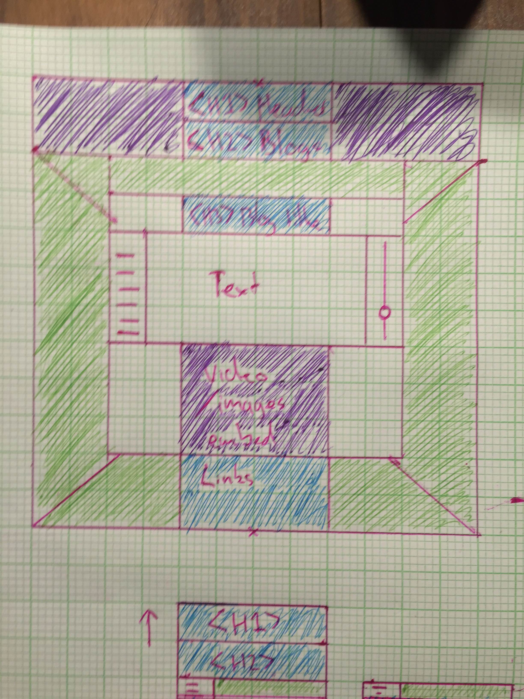
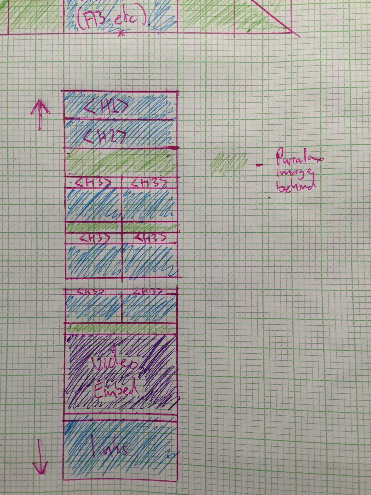
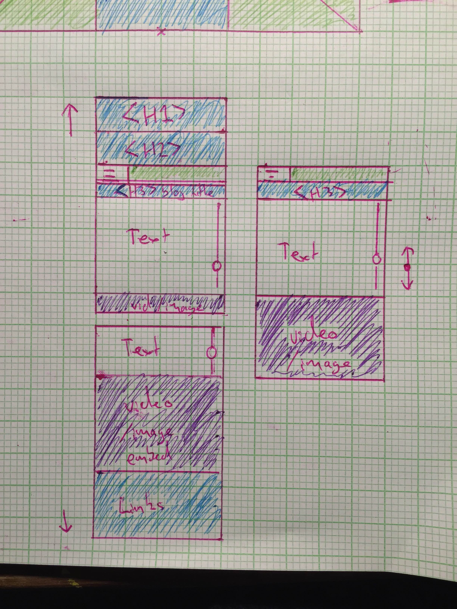

I have started using the pomodoro technique and am finding it very successful so far. I read about it on fellow student Lisa Seeto's blog, and it was also mentioned in the fireside chat and in the time and habit management resource page.
This technique works well for me, as I have bad procrastination and distraction habits, and can get exausted from focusing on one task for hours at a time. Trying to push through for too long always results in me getting blocked. With the pomodoro technique, I am adjusting to spending 25 minutes at a time on a task, but the main thing I need to focus on is limiting the break time to 5 minutes. Once I stop I can feel hesitant to start again, so I need to continue to time and push myself. Toggl is a great tool for this, and time management in general.
I use meditation sometimes, mainly at times when I am creatively blocked. I usually use this when it comes to things like writing or painting, so I need to understand how it can help to relax my logical brain as well as my creative brain. I have some subconscious bias that makes me think that if I meditate before coding it won't improve my results, but I need to learn how it can relax my mind generally so that I can use it to focus and absorb information more easily.
While it is hard to pinpoint exactly what I learnt, there are certain points that resonated with me. The first speaker in the 101 video talked about how his "job title" stemmed from his general merriness, and his passion for making other people laugh. In the workplace I am the same, I take on a character who aims to entertaining my colleauges and work friends. I understand that work can be repertitive and tiresome, and so in the hospitality industry, sometimes a good laugh now and then can help seperate the monotony of quiet hours, and the stress or a rush hour. I can assume the same goes for the web development industry. Sometimes the work load can feel heavy, but while you are surrounded by people who are sociable and entertaining to you, the stress can be negated. Emotional Intelligence helps people to maintain a positive attitude in the workplace, both with their own work, and how they work and interact with others. Stopping to be mindful of the work other people are doing and the expectations of yourself both as a worker and a peer can help you to act rationally with awareness. This is a positive skill in the work industry, as irrational, erratic and inconsiderate workers and undesireable, no matter how skilled they are, when it comes to working in a team.
Before starting at dev I have had a growing interest in the mind. When it comes to concepts such as ego and awareness, so the concepts of mindfulness fall under this interest to me. The mind can operate in automatic or manual mode, and one of the best examples of this to me is breathing. When you think about your breathing, you are manually breathing. Eventually you will forget about your breathing and you will start breathing automatically. The same can go for concentration, as stated in this chapter. When you lose concentration, you can gain it again as soon as you realise that you lost it. So similar to breathing, there is analogously manual and automatic concentration. The expectation of training yourself to concentrate, it that if you keep microadjusting your focus whenever you lose it, you will train your automatic conentration. This is something I want to continually working on, as I can have a very erratic attention span at times.
These concepts of auto and manual thinking apply to all aspects of emotional intelligence. If you are aware of your actions and thoughts in the workplace, you are more in contral and far less erratic. If you can take a second, or even several minutes, so stop and consider all the external situations internally, you will find that you have a clearer and more decipherable view of every situation and problem. I found the two minutes of mindfulness to be similar to meditation. Stopping to experience the sensation of your body, and the straying thoughts of your mind can at first be overwhelming and confusing, but as you become more manually in control of your thoughts, you will find you can clear your mind of the "automatic" messages, like feeling hungry, or bored, or thinking about what you are going to do after work, then you can stop and concentrate on the present task at hand.
This concept affected my approach to site building by allowing myself to calm my stresses about whether my site would be able to live up to the incredible sites I hav seen online or from fellow members of my cohort. I was able to take the time to understand what I wanted to do for my site at my own pace. I am thankful for EDA's holistic approach to learning, as the process and personal approach are considered more than just the finished product. In my experience with university, I felt like the learning was very detatched from the student. It was all about one way of teaching, and if that wasn't how you learnt, tough luck. I was also never encouraged to feel like an individual with my own ideas to offer, I just felt like an inferior student to the others who could understand the information and get better "marks" than me. This put me into a bad habit of stressing whenever something didn't make sense to me immediately, and this ultimately blocked me in my studies. I am still trying to break these habits, but these search inside yourself videos are incredibley inspiring and insightful. They let me feel like myself on my own journey, rather than a student in someone else's.
I have had a lot of respect for meditation in the past. Many of my friends who are artists or muscisians have encouraged me to try it in the past. I have steadily been using meditation as a calming/awareness tool for myself, but I was mostly using it for art or in high stress situations. I am finding myself further encouraged to meditate before coding as it helps clear my head of everything I was doing before I started working, and also of everything I think I would rather be doing. Meditation is an amazing way of calming yourself of distractions and agitations.
From the video below I found great insight into the emotional side of the human experience. Being able to be mindful of your own emotions, and understand that your emotions aren't you, they are a part of your body just as pain or hunger are. Through this thinking, if I feel I am blocked, or am angry, frustrated or sad about anything (work related or otherwise), I know I can meditate and find awareness that those emotions aren't me, and that they will pass shortly with mindfulness.
None of the meditation techniques stood out to me, except I know to focus on having good back posture when I do meditate. My years of computer life have given me bad posture habits, to if I can start to correct that through mindful meditation, maybe eventually I can train myself to have better posture. And body language is everything. If I have better posture and stand taller, that should translate into more self confidence, both in my own perception, but how others will see me too.
The midnfulness conversation involved on person talking in monologue for 4 minutes, and then having the second person attempt to explain/repeat what they had said. You continue correcting the other person until you are certain that they fully understand what you intended initially. This was a very interesting excersize, and I tried it with my younger brother. I find that the problem with words is that they feel very 100% in their definitiona and interpretation, but ideas are never really that clear. One persons understanding of a sentence or idea may vary to another persons, due to their own personal experience and emotional connection the the words and ideas expressed. So in my conversation with my brother, there was obviously already a lot of pretense about what we knew and thought about each other, which I believe could skew the results of a conversation like this. Any idea I would express, he would subconsciously associate it to things I have expressed before, so some ideas took certain clarifying. When it was his turn to talk, I paid mindfullness to the "dipping" technique, of giving the other person your full attention, but still maintaining focus of your body and mind. I was paying attention to everything he said, and was trying to process it in isolation of what he was saying now, rather than on top of what he has said in the past. I found the experience of conversation this way to be far different, as being more midnful of the language used to express ideas helped me to see the expression in it's "true" form, seperate from my own emotional connection to the speaker or the words used.
I will continue to use the dipping technique, as I find having focus on yourself while you are the listener is a great way to continue to pay attention, you don't shift into auto listening mode as you are being mindful of yourself and what you are listening to. I am constantly trying to put myself into my manual mind, as my automatic mind is prone to distraction and addiction, but my manual mind is logical and doesnt desire such things.
I find the relationship between the two is that these two functions are about stopping your automatic brain and focussing on your manual brain. Gaining complete control over your thoughts and considerations. This lets you observe and calculate more practically and personally, without your feeling getting in the way. It is far easier to consider an issue or idea in logical isolation from emotions, rather than reactively getting caught in how you feel about the matter. (be it angry, sad, confused, these feelings can all distract from your observation and perspective.) Being mindful is not strictly about self, but about your perspective on things. Stopping to observe and consider your perspective is what Self Awareness is. Example: Mindfulness is considering what work there is to do, Self Awareness is considering why it is important for YOU to do that work, and what it will take to get it done.
The body scan technique is a useful way of gaining Self Awareness. Particularly, self awareness of your physical body and the nervous system your brain feels. I found that by focusing on the sensation of breathing, starting with my chest, and then working my focus along my limbs one at a time, was an interesting sensation. I felt more concentrated and understanding on the natural systems of my body, air breathing in and out, blood pumping back and forth, muscles tensing and releasing. This is a useful excersize for getting in touch with your body, which is especially important when working with computers, as you can get very caught up in your virtual mind.
As I explained in the first section of this blog, as much as emotions are a part of you, they are a natural system of the brain to allow you to fluently swap between automatic and manual thinking. In the same way that if you touch a hot surface, you will reactively pull your hand away from it, being emotionally responsive to something will cause you to pull away, retreat. This isn't to say that emotions are a negative thing, but that they are simply a tool that guides your thinking and understanding. While emotions are the corners of mentality, concsious thought can be completely isolated from emotion and based on logic alone.
While I dislike use of the term "trigger" for something that displeases you, my biggest block when programming is when a small element of a program doesn't work as I expect it to, and I can't find any observable reason why. Staring at one bug without being able to solve it for an extended period of time can be incredibly frustrating for me.
This excersize is effectively the steps I take to calm down and refocus. Stopping, Breathing, Noticing, Reflecting, Responding. Usually when I get blocked, I will stand up, or leave the room for a few minutes to clear my head. This way once I sit back down again I can more calming look at things from fresh eyes, without skimming over elements that I am confident are correct. Then I can slowly read the code, usually explaining it out loud to myself so I can notice if there are segments that are written incorrectly, have faulty logic, or maybe something that I don't understand as well as I should. Usually by working through the problem this way I am able to solve the issue, which often is a small syntax error, or a logic negation I didn't catch when I was frustrated.
EDA offers a learning experience that on many levels seems to cater more to many styles of learning, with a focus on learning and the journey rather than the results of each assignment. This experience so far definitely appeals to me far more than my university years. As little as I have done so far, I feel I have been able to do it at my own pace and I have learnt far more. Two years at university and command line was still confusing to me, but one week of doing it at my own speed and I already understand it so much more.
After watching the fireside chat, I am aware that for my personal journey with EDA, I need to ensure that I motivate myself. Previously I have had issues with procrasination and stress. I need to not let things wait until the last minute, and motivate myself to learn for myself. I understand that I am not "entitled" to the knowledge or the qualification that I expect at the end of EDA, but I must push myself as a student and a creator to achieve the goals I have set for myself.
The 9 weeks remote have eased my mind a lot. I had a fear that the whole 18 weeks would be very full on and learning intensive. I was afraid I would be dropped in the deep in (like university has felt in the past) and that I wouldnt be able to keep up. The current sprints feel like a nice way of guiding my own research, as though I am still preparing for the boot camp, but just being told what I need to be researching. Overall I think I didn't expect to actually be as comfortable as I am now only 1.5 weeks into the program.
I'm a big fan of colour in design, and interesting colour combinations and clashes. My CSS skills are very fresh currently, so I hope in time I can more effectively manipulate colour. Effects like gradients can be very visually interesting, but also minimalistic icons that have disctinct colour can allow web elements to pop out and have their own unique space.
I like the idea of using simple but bold fonts and font size, often overlaying and contrasting colour or an image. To make the text contrast with an image I like either a black and white image, or a landscape image out of focus to create a parralax illusion.
I assume that animations of web elements will be covered when we begin learning Javascript, as that can manipulate the HTML. I would like to learn many of these elements, as some of the Zen Garden websites demonstrated interesting elements that can't really be shown with screenshots. But simple touches like having text fade in as you scroll down the page can draw the eye to the information in a smooth yet striking way. Also the animation of image/text boxes can make them feel more physical. Having a box grow and shrink upon mouseover, or have elements translate their locations on screen can make for an exciting and natural web experience.
Using an analogy from the udacity lesson 1 videos, the website is like a house. Html describes the rooms of the house and what they "contain". CSS describes the "Furniture" and stylings of each room, and the whole house in general. DOM (document object model)describes the tree like structure that the website is based on. Each element and section of the the website is a brach of a tree in the DOM. Each node of the tree is an object, representing a part of the overall document/website. for example, the head of the website is broken down into its comprised elements and they each branch off until the section is fully described. Its likes breaking the look of a website into boxes, except doing it with the code instead of the visuals.
carrying on from there, boxifying design is when you break down the interface and space of a website into all of the "box elements" it is comprised of. Every elements of a website; text boxes, images, title cards, etc, is actually a rectangular space. So boxifying a webpage involves boxing out the rectangular sections of the elements. Sometimes the boxes are nested, and this is important to how you allocate the space with css, as some rectangular sections are alligned or related, or contained within a larger rectangular space.
The box model breaks down each rectangular section into it's parts. Each part of the box model is like a frame around the other part. At the very center is the "content", so the text or image that holds the rectangular space. the frame around the content is the "padding", whichs clears a transparent space around the content. This just pushes other elements a set distance away from the contents space. The next frame is the "border". And it is just that, a border, that wraps around the padding and content. And finally there is the margin. similar to the padding, the margin just creates a transparent space around the border
Grid based design is a way of breaking down a webpage into the space per amount of rows and columns. An example from the udacity course is of a page that uses 2, 3 or 4 columns at once. Because of this, you would break down the columns into 1/12s of the width of the page, and allign everything according to each 1/12. The same goes for rows if the rows are divided.
Responsive pages are important nowadays as people often browse webpages from phones of varying resolutions, tablets, and sometimes computer monitors of different resolutions too. If you only design the webpage for one of these resolutions, the layout may fall apart on the other devices. With responsive design, the page elements are more flexible and will arrange nicely when viewed in different window sizes or resolutions.
This is the use of diffing headers and subsections. h1 / h2 are examples of this. Semantic structure is the reason that paragraphs, subtitles and the page header of this page stand out from each other.
A responsive site is a website that condenses and realligns to match the size of any window but still retain the intended structure and layout. This means that when viewing the site on a smaller screen, minimized windows, on a phone/tablet etc, the site can still convey all it's important information and UI elements. This is important to so that the sites design and features are visible and maintained under any viewing size.
mobile resolutions are more set than desktop windows, so the site features can be designed to nicely fit onto the screen size. From there you know what the max and min width and height of each "box" or "column", so when you enlarge it to fit full resolution monitors, the features can expand to fit, but will still be visually balanced at any size. It is far easier to start small and stretch it out, rather than try to condense the larger design to fit a smaller screen and then encounter spacing issues.
framework is the base layout of the website before it is made. They are important because you need to plan the spacing and allignment of the website, as it is more structurally pleasing if the space that each element occupies is considered before starting to code the website. The con of frameworks is that maybe your design doesn't look as nice as you expected, or you change your mind on the position/size of elements as you work on it. This con is offset however, by the fact that you would encounter more of these problems if you didnt have a framework. Wireframes fall under framework, but help to allign the elements to a 12x12 grid (at least in the personal situations that I have used wireframes so far). Web design is generally easier when you break elements down into squares (boxifying).
  Javacript is a language that qwork sequentially (like java, or other object oriented languages like python and c. Javascript can be used alongside html and css to change elements, or animate elements. Html lays the foundation and the information. Css decorates and organizes that information, and Javascript allows the position and elements to change on the fly, with updates and actions.
Javascript works sequentially, in that is carries out the code as it is written from top to bottom. There are also loop elements, where you can make the code repeat a segement of code until a set condition is complete. In everyday life, this could be like going to school and having 6 classes. Each class is like another sequence of the loop, and the loop continues until the 6 classes have been complete.
Data in arrays is stored in indexs, where the index position is the "key" to access the data, and the data stored is the "value". In Object literals, data is stored in object format, where the key is created based of a variable name that you assign it, so it can be anything from '1' to "Big Piece of Toast". An Array is like a row of boxes, and object literals are like a bag filled with connected items.
A function is a precoded segment that takes parameters and generally returns something. Because the function is premade for a purpose, it can be called any time it is needed to translatte the parameters into a return statement. It also means that you don't have to rewrite certain segments of code if you are expecting to call upon that "function" several times. The simplest example is a function that takes 2 numbers and returns the sum of those numbers. A more complex example is a function that takes and array and a string, and returns an array of objects within the first array that contained the string.
A great example of this is while I was working on the Minesweeper game for sprint 6. While doing the win detection step, I had a for loop, with and if- else if block, with another if statement contained within the first. With all these nested conditionals, it could get a little tricky to trace through and understand what wasn't working. Every other element of the game was working and displaying during tests, but I couldnt get the win prompt to show up.
I rewrote the code several times, and traced back through the related code to find anything that wasnt correct, and though I found several innaccuracies, I still couldnt get the win condition to occur.
The way I solved the problem was by using Console.log statements throughout the conditionals, to print a string of code about the conditional. On the chrome developer tools I could observe the log as I ran through the game, and could check whether the code was actually reaching the individual conditionals or not. Using this I managed to find that the code was failing when it found that a mine that was marked was still considered to be hidden. Once I managed to work around this bump, the win condition prompted correctly.
Through solving this problem I found how useful it can be to use console.log to check individual conditions that are/aren't being reached during certain events in the program, and is a problem solving technique I will use in the future, and recommend highly
I usually consider PseudoCode in my head, thinking through the steps that a program will need to go through, and consider simple elements that it will use. This way I have a good idea of the main operators in the code, but can solve the more complex problems while working through it. I should get into a better habit of drawing out pseudocode, in a chart or simple blocks.
After considering pseudocode, trying stuff and seeing what sticks is another thing I do regularly. You always have room to go back and refine code later, but being able to block out elements and solve several small problems to solve a big problem is a method that works a lot more naturally for me.
Upon looking up this method to understand what it means, I am aware that I often do this when stuck. I will individually go through and read out loud what each line of code is meant to do. I'll play out a scenario and go through the conditionals and follow where the code will lead for that use case. This is a good method for double checking slowly that you didnt make a small mistake somwhere, logical or syntaxical.
Sublime/Atom give plenty of error statements while coding, and I always pay attention to them. But so far in my time at eda I haven't needed to make an individual function to catch errors. This is something I did while studying Java, so when the time comes I should be able to pick up this skill easily.
I use gooogle regularly to find documentation for certain language elements. If I don't, for example, fully understand the breadth of what a class or object in Javascript are capable of, I find it helpful to read through the documentation. While I may not know how to apply all of it's uses, I can at least understand what it is functionally at a broader level.
This is something I am not very confident with. I prefer to solve problems myself rather than admit to someone of similar level that I do not understand. This is a bad habit carried over from university where I felt like I would miss one simple concept that everyone else seemed to pick up easily, but would be too ashamed to ask for help. I will be sure to push myself to ask for help, especially as EDA has a more comfortable peer environment
I often reflect on what elements I used in my problem and how they were useful above other concepts I could have considered. This helped me to understand broadly how I solved the mass problems, and can more naturally apply those problem solving skills to future problems.
Can perform a custom method on every item within an array, and return a new array with the results of the custom method
Similar to map, performs a custom method/function through an array, but where the custom function returns true or false based on preset conditions. The array that is returned is just the original array, but only with elements that returned true remaining.